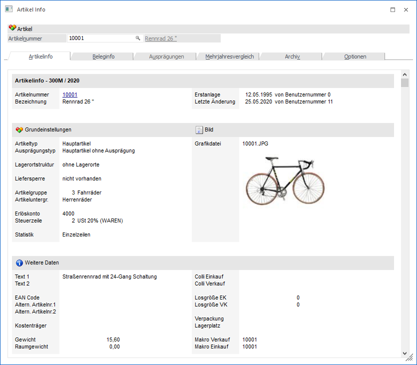
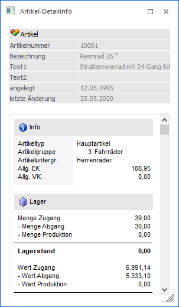

In diesen Optionen können Sie einstellen, welche Informationen während des Belegerfassens zusätzlich zur Verfügung stehen sollen:
Ø Artikel-Information
Durch Aktivieren der Checkbox "Artikel-Information" wird analog zum gewählten Artikel eine Detailinfo des Artikels angezeigt. Die Anzeige ist frei definierbar.

In diesem Fenster können Sie auch Mehrjahresvergleiche anstellen und auf Archiv-Dokumente bezogen auf den aktuellen Artikel zugreifen. Siehe Kapitel - dort wird über den Button INFO dieselbe Funktion aufgerufen.
Ø Artikel-Detailinfo
Diese Info zeigt Ihnen komprimiert die wichtigsten Lagerinformationen des Artikels

Ø Grafik
Ist im Artikelstamm (im Fenster "Texte") im Feld "Grafik" eine Grafikdatei hinterlegt, kann durch Aktivieren dieser Option die Grafik im Belegerfassen laufend angezeigt werden.
Ø Zeilenkalkulation
Durch Aktivieren der Checkbox "Kalkulation" kann eine Zeilenkalkulation durchgeführt werden.
Ø Belegkalkulation
Durch Aktivieren der Checkbox "Belegkalkulation" kann der gesamte Rohertrag des Beleges kalkuliert werden, wobei eine Änderung immer nur beim Summenrabatt berücksichtigt wird.
Ø Artikelbedarfsvorschau
Durch Aktivieren der Checkbox "Artikelbedarfsvorschau" werden aktuelle Bestellwerte zum jeweiligen Artikel angezeigt.
Ø Preishistorie
Bei Aktivieren dieser Checkbox wird die Preisentwicklung bei dem aktuell angewählten Artikel aufgrund der Informationen des Artikeljournals angezeigt. So ist sofort nachvollziehbar, wann welcher Artikel in welcher Menge um welchen Preis verkauft wurde (oder im Einkauf: eingekauft wurde).